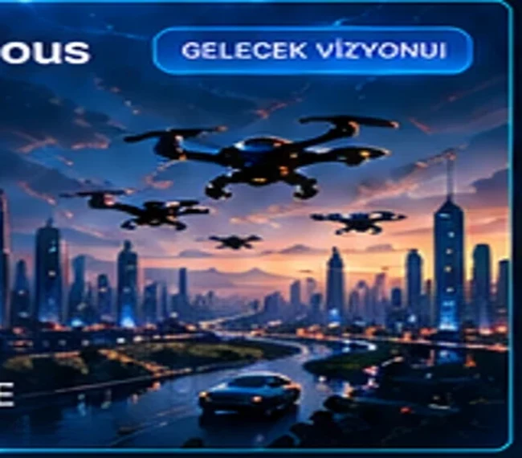
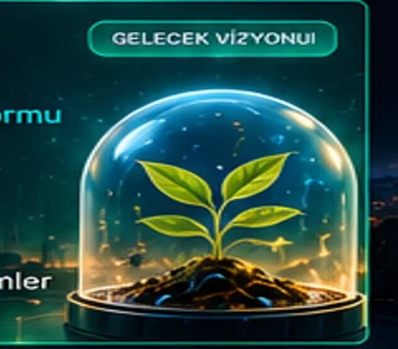
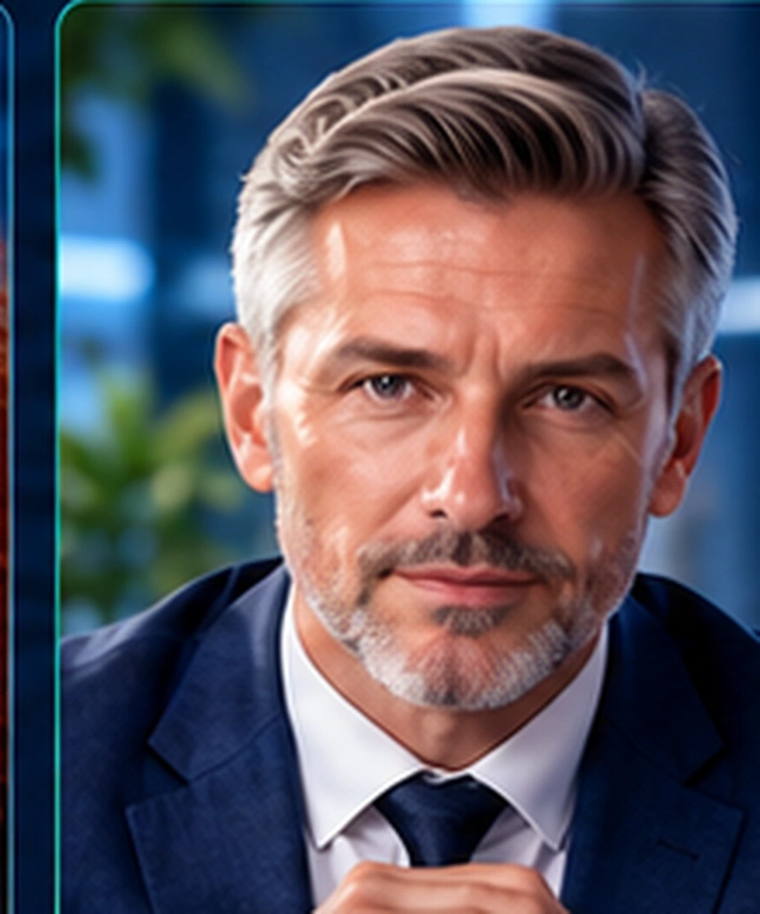
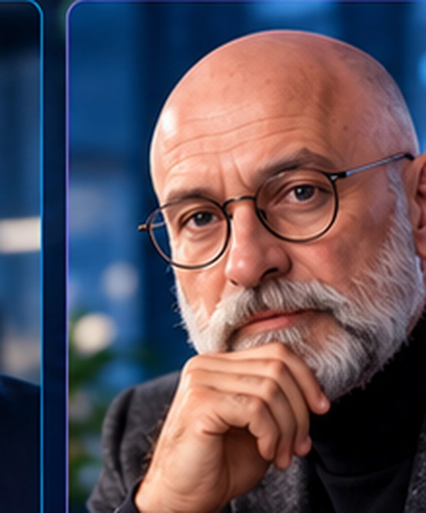
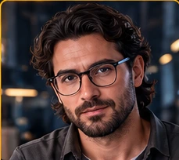

01 / ERNASA LABSGeliştirme aşamasında
ERNASA İK
Yapay zekâ destekli işe alım ve aday değerlendirme.
İnsan potansiyelini teknolojiyle güçlendiriyoruz. Bugünün iş süreçleri için somut çözümler, yarının dünyası için cesur araştırmalar.
Geliştirme aşamasındaki ürünlerimizle uzun vadeli araştırma vizyonumuzu birbirinden ayırıyor, her projenin amacını açıkça anlatıyoruz.
Yapay zekâ destekli işe alım ve aday değerlendirme.

Satış süreçlerinde veriyle güçlenen karar desteği.
Tek bir teknolojiye değil, yıllar içinde gelişebilen güvenli ve insan merkezli sistemlere odaklanıyoruz.

Tek kimlik, farklı cihazlar ve dijital bedenler.

Silahsız otonom sistemler ve kolektif zekâ.

Simülasyon, dijital ikiz ve modüler altyapılar.
Teknoloji, strateji, güvenlik ve inovasyon için tasarlanan yapay zekâ uzman karakterlerimiz.
Baş AI Koordinatörü
“Doğru sorular, doğru çözümlere götürür.”
Detaylı Tanıtım →Yazılım Geliştirme Uzmanı
“Fikirleri çalışan çözümlere dönüştürür.”
Detaylı Tanıtım →İş Stratejisi Uzmanı
“Büyük hedefler, doğru stratejiyle ulaşılır.”
Detaylı Tanıtım →
Finans ve Muhasebe Uzmanı
“Veriler netse, kararlar daha güçlüdür.”
Detaylı Tanıtım →Pazarlama ve Müşteri Kazanımı Uzmanı
“Doğru hikâye, doğru insanlara ulaşır.”
Detaylı Tanıtım →Siber Güvenlik Uzmanı
“Güvenli sistemler, sağlam yarınlar demektir.”
Detaylı Tanıtım →
AR-GE ve İnovasyon Uzmanı
“Bugünün merakı, yarının dünyasını inşa eder.”
Detaylı Tanıtım →Yapay Zekâ Mühendisi
“Yapay zekâyı güvenilir çözümlere dönüştürür.”
Detaylı Tanıtım →
Bulut ve Altyapı Mühendisi
“Güçlü altyapı, kesintisiz gelişim sağlar.”
Detaylı Tanıtım →
UI/UX Tasarım Uzmanı
“İyi tasarım, teknolojiyi insanla buluşturur.”
Detaylı Tanıtım →Robotik ve Otonom Sistemler Uzmanı
“Teknolojiyi geleceğe hazırlıyoruz.”
Detaylı Tanıtım →Yazılım Kalite ve Test Uzmanı
“Daha az hata, daha güçlü yazılım.”
Detaylı Tanıtım →NEXUS 12, ERNASA’nın dijital uzman ekibi geliştirme konseptidir. Uzman ajanlar henüz aktif değildir; yeni uzman portreleri yapay zekâ ile üretilmiş temsili görsellerdir.
İşletmelerin süreçlerini anlamayı, doğru teknolojiyi seçmeyi ve sürdürülebilir dijital çözümler tasarlamayı hedefliyoruz.

İhtiyaçları ve kullanım senaryolarını analiz eden yaklaşım.

Modüler, geliştirilebilir uygulama mimarileri.

Tekrarlayan iş akışlarını sadeleştiren çözümler.

Karar süreçlerini destekleyen veri yorumlama.

Gizlilik ve güvenliği tasarıma dahil eden ilkeler.

Simülasyon ve ileri teknoloji araştırmaları.
Bu alanlar potansiyel kullanım senaryolarını gösterir; mevcut müşteri referansı veya tamamlanmış proje iddiası değildir.

ERNASA, insanı merkeze alan yapay zekâ çözümleri ve geleceğe yönelik teknolojiler geliştirmeyi hedefleyen bir girişimdir. İlk ürün odağımız işe alım süreçleridir; vizyonumuz bununla sınırlı değildir.
Uzun vadede güvenilir, geliştirilebilir ve farklı sistemlerle birlikte çalışabilen bir yapay zekâ ekosistemi oluşturmayı amaçlıyoruz.
ERNASA'nın projelerini takip etmek ve olası iş birliklerini değerlendirmek için kurumsal kanallarımızı kullanabilirsiniz.
Ürünlerimizi ve teknoloji yaklaşımımızı inceleyin. Kurumsal iletişim kanallarımız doğrulandığında bu alandan doğrudan ulaşabileceksiniz.
Projeleri keşfetHenüz doğrulanmamış iletişim bilgisi veya çalışmayan form sunmuyoruz.